Minoru Takai（高井 実）
Contact @debiru
table-cell に position: relative を指定しても、子孫の absolute の基点にならないよね？
| display | element | 種類 | # |
|---|---|---|---|
| table, inline-table | table | テーブル | 1 |
| table-row | tr | 行 | 2 |
| table-row-group table-header-group table-footer-group |
tbody thead tfoot |
行グループ | 3 |
| table-column | col | 列 | 4 |
| table-column-group | colgroup | 列グループ | 5 |
| table-cell | td, th | セル | 6 |
| table-caption | caption | キャプション | 7 |
relative が適用されると2つの効果が得られる
この未定義ってオフセット効果だけじゃないの？
読み方が悪い？どういうことなの？
で、実際どうなのよ。
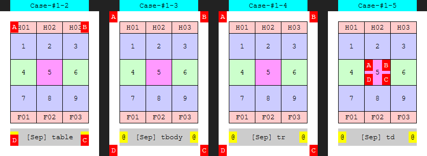
table と table-cell と caption が基点になっている
（row, row-group は無視される）
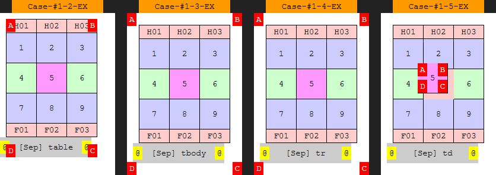
table と table-cell と caption がオフセットできている
（row, row-group は無視される）
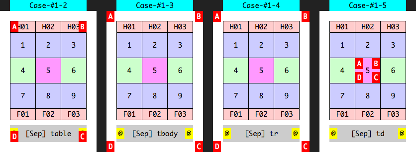
table と table-cell と caption が基点になっている
（row, row-group は無視される）
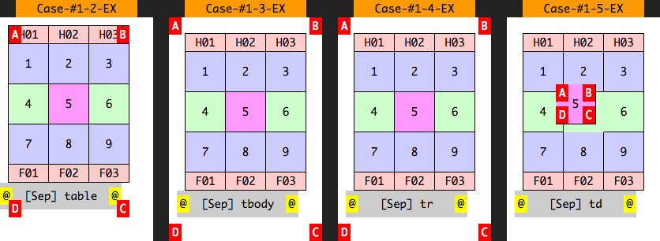
table と table-cell と caption がオフセットできている
（row, row-group は無視される）
そして Firefox では
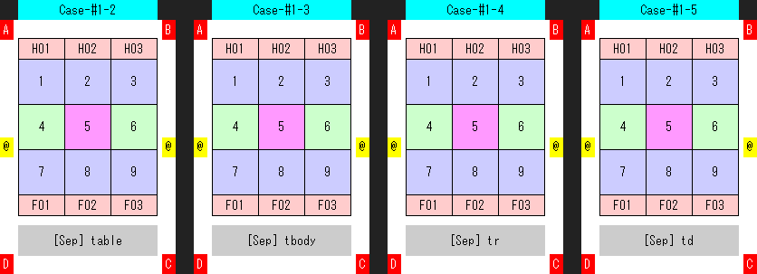
おい table 仕事しろ
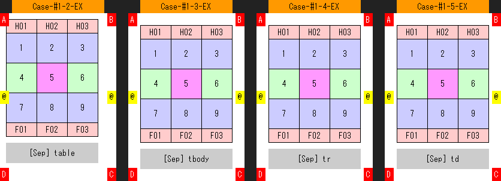
table のオフセットは効いている
| ブラウザ | 基点 | オフセット |
|---|---|---|
| IE 8/9/10/11 | 1, 6, 7 | 1, 6, 7 |
| Chrome, Safari, Opera | 1, 6, 7 | 1, 6, 7 |
| Firefox | 1 |
1 table /
2 table-row /
3 table-row-group /
4 table-column /
5 table-column-group /
6 table-cell /
7 table-caption
この分かりにくい仕様のせいで、15年近くもの間、人々を苦しめることに
2000年から2014年頃までに Bug 63895 基点問題の重複レポートが山のように報告される
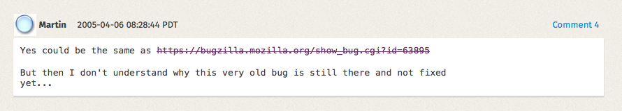
2005年のコメントの時点で「なぜこの大昔のバグが未だに直ってないのか理解できない」
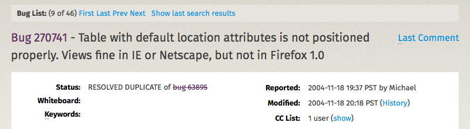
2004年のレポートで「IE と Netscape は Fine なのに Firefox はダメだ」と言われる
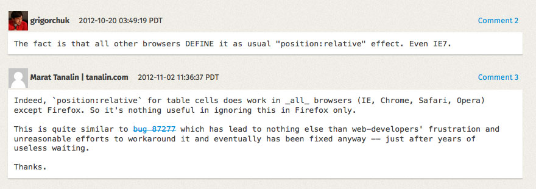
2012年のコメントで「IE7 ですら定義されてるんだぞ」「Firefox を除いては、他のブラウザで全て動くのに」「この状況をあと何年待てばいいんだ」との声
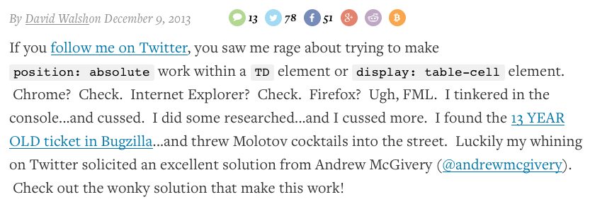
2013年の記事。「Firefox で見ると… FML （最悪）だ」「13年前のレポートが未だに修正されていない」
「Firefox はもうこの仕様を見直すことはないんだ」と table-cell + relative 問題を諦めかけた頃…
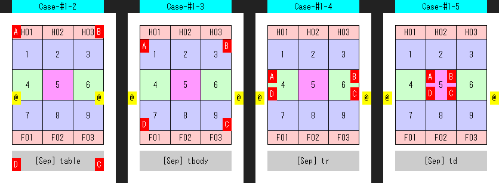
table-row-group, table-row, table-cell が基点に対応
（table-caption は対応していない）
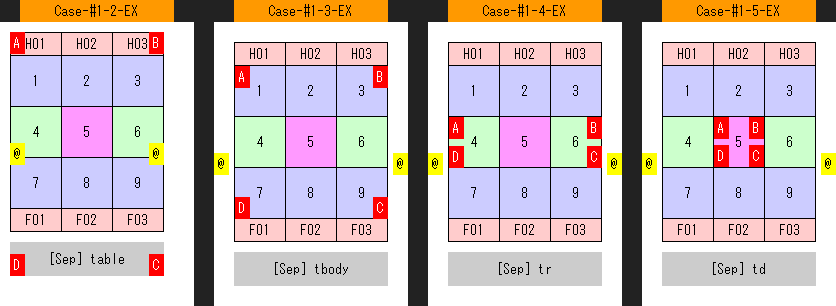
しかしオフセットには対応していない
Firefox は更に進化する
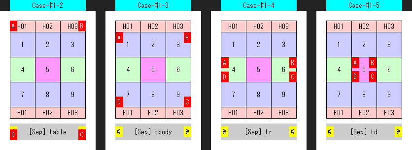
table-caption も基点に対応（全完）
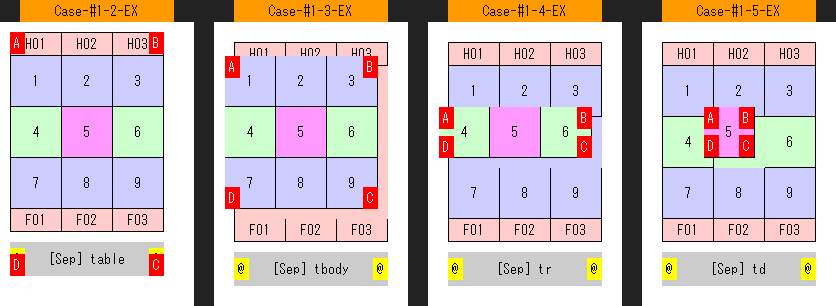
table-row-group, table-row, table-cell がオフセットに対応
ほぼ全完（table-caption は未対応…これって…）
Firefox「伸び代ですね！」
| ブラウザ | 基点 | オフセット |
|---|---|---|
| IE 8/9/10/11 | 1, 6, 7 | 1, 6, 7 |
| Chrome, Safari, Opera | 1, 6, 7 | 1, 6, 7 |
| Firefox 37+ （2015年3月） | 1, 2, 3, 6, 7 | 1, 2, 3, 6 |
1 table /
2 table-row /
3 table-row-group /
4 table-column /
5 table-column-group /
6 table-cell /
7 table-caption
日本語の記事はあまり見つからなかったです
Mozilla に15年間苦悩した人々のことを思い出しながら table-cell + relative を活用してください
relative のオフセットと基点の話でした。